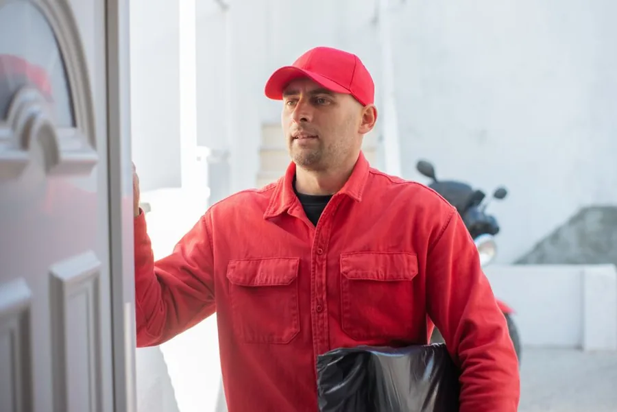
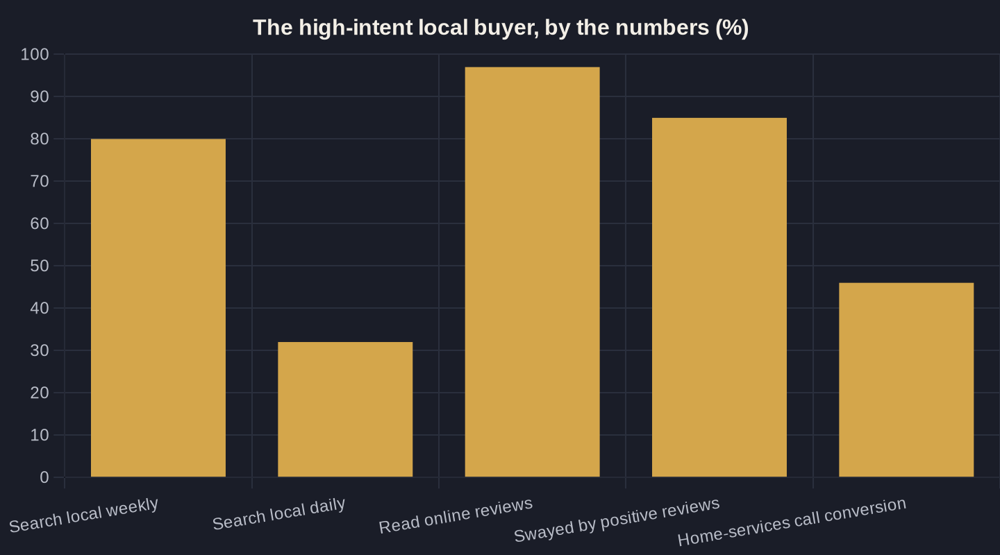

Google Ads for Local Service Businesses: The Complete Playbook
What you'll pay per lead, where the budget leaks, and how to trace every ad dollar to a booked job — without the agency fluff.

Key takeaways
- Local service buyers search with intent — 80% look up a local business weekly — so paid search puts you in front of active demand, not strangers.
- Home-services leads now average $90.92 each (up 10.51% year over year) versus a $70.11 all-industry baseline; know your vertical's number before you judge your account.
- The phone call is the conversion: home services converts 46% of inbound calls, so track calls or you are optimizing on half your data.
- Owner's Math — tracing $1 of spend to a booked job's ROAS and payback — is the only scoreboard that tells you whether the channel is actually working.
- Build the spine first: intent keywords plus negatives, a one-action landing page, call tracking, and a weekly math check. Automation only tunes on top.
Why Google Ads Works for a Local Service Business
When someone types "emergency plumber near me" or "Botox near me" into Google, they are not browsing — they have a problem and a wallet open. That single fact is the whole case for running Google Ads for a local service business: you pay to appear at the exact moment a buyer is looking for what you sell, instead of hoping to catch them later.
The intent behind those searches is measurable, not theoretical. By one industry count, 80% of US consumers search for a local business at least weekly and 32% search daily, which means paid search drops you in front of people actively shopping rather than passively scrolling a feed.
Contrast that with channels that interrupt. A billboard hopes a passing driver happens to need a new roof; a search ad answers a buyer who already typed "roof repair near me." That gap in intent is why a disciplined Google Ads account is often the most predictable lead source a local owner has — as long as the math underneath it is honest, which is where most accounts quietly fall apart.
Most owners who say "Google Ads didn't work for me" were never running Google Ads in the disciplined sense. They flipped on a campaign, let Google's defaults spend the budget on broad matches and loosely related clicks, and then judged the channel by a number nobody was steering. The channel works. The autopilot does not.
What You'll Actually Pay: Local Service Benchmarks
Lead costs have climbed, and pretending otherwise sets a budget up to fail. In the latest benchmark year, home-services Search ads averaged a $90.92 cost per lead, up 10.51% year over year — the price of a single inquiry — on an average cost per click of $7.85. That study covered 3,211 home-services campaigns, and cost per lead (CPL = what you pay for one inquiry) rose for 69% of advertisers in the set.
Hold that against the all-industry baseline so you know whether you are winning or bleeding. Across 16,446 US campaigns, the average Search ad converts at 7.52% with a $70.11 cost per lead and a $5.26 cost per click. Home services pays a premium on both — partly because the jobs are worth more, partly because every competitor in town is bidding on the same handful of high-intent phrases.
It helps to know what drives that premium in your trade. Emergency and high-ticket categories — water damage, HVAC replacement, legal, med spa — carry the steepest clicks because the value of one won job justifies aggressive bidding from everyone. Lower-ticket, recurring services sit closer to the all-industry average. Your real benchmark is your own vertical in your own market, not a national blended number.
Treat these figures as a yardstick, not a verdict. If your Google Ads for local service business work is returning qualified leads under $90 in a high-ticket trade, you are likely ahead of the field. If you are sitting well above it with little to show, the problem is rarely the click price — it is something upstream in keywords, the landing page, or tracking.

Build the Right Foundation: Keywords, Budget, and Bidding
Three decisions set the ceiling on everything else: which searches you pay for, how much you put behind them, and how you tell Google to bid. Get these wrong and no amount of clever ad copy saves the account — you will simply buy bad clicks more efficiently.
Before a single dollar goes live, three things should be settled:
- Keywords and negatives. Pair high-intent phrases like "ac repair near me" with an aggressive negative list — "ac repair jobs," "ac repair training," "diy ac repair" — so you stop paying for clicks that will never book. That balance of targeting and blocking is its own craft; choosing and blocking the right local keywords covers it end to end.
- Budget from arithmetic, not nerves. Set it from your target cost per booked job and your close rate, not a number that simply feels safe — the local budget guide runs the full calculation.
- A bid strategy that matches your data. The bidding strategy breakdown explains when Manual CPC (you set the max bid) beats automated bidding, and when you have earned the right to graduate.
One more decision comes before any of this: the ad product itself. For several trades, Google's Local Services Ads — where you pay per lead rather than per click and carry a "Google Guaranteed" badge — are the smarter first dollar. Weigh Local Services Ads against standard Search before you commit a budget to either.
The Click Is Only Half the Job
A click is rented attention, and at $7.85 each it is expensive. What actually converts it into a booked job is the page it lands on and the reputation the buyer checks on the way. Send that paid traffic to a generic homepage and you will pay premium clicks to watch visitors hunt for a phone number and give up.
The destination has to match the search and make one action unmistakable — call now or book now, above the fold, on a phone screen. A purpose-built page routinely outperforms a homepage by a wide margin; the landing page that doubles your leads lays out exactly what belongs on it and what to cut.
Then comes the trust check you do not control. 97% of consumers read online reviews for local businesses and 85% say positive reviews make them more likely to use one — so even a perfectly tuned click delivers a skeptical buyer who will scan your reviews before dialing. Your Google Business Profile and your review velocity are part of the ad campaign whether you manage them that way or not.
Speed matters as much as the page. A buyer who clicks your ad is, at that moment, one tab away from your competitor's. The faster you answer the call or reply to the form, the more of that hard-won click you actually convert — which makes your front-desk process the real last step of the ad campaign.
| Metric | Home services | All industries |
|---|---|---|
| Average cost per click (CPC) | $7.85 | $5.26 |
| Average cost per lead (CPL) | $90.92 | $70.11 |
| Average conversion rate | Not separately reported | 7.52% |
| Call-to-conversion rate | 46% (highest of any sector) | 37% |
| Year-over-year change in CPL | +10.51% | Not reported |

Track the Phone Call or Fly Blind
Here is the mistake that wastes more local ad budget than any other: optimizing toward form fills while the real money walks in over the phone. For a service business, the call is the conversion — and if your account cannot see it, your account is guessing.
The numbers are blunt about where jobs are won. Across more than 60 million calls, 37% of inbound phone leads convert during the call, and home services posts the highest call-to-conversion rate of any sector at 46%. If your tracking cannot tell you which keyword drove which call, you are optimizing on half your results — usually the smaller half.
Closing that gap is mechanical, not magic. Conversion and call tracking, set up properly is the difference between knowing your true cost per booked job and guessing at it from raw clicks. Until the phone is wired into the account, every other optimization is built on sand — you will be tuning bids toward the wrong outcomes with confidence.
Owner's Math: What $1 of Ad Spend Should Return
Every figure in this playbook only matters inside one question: what does $1 of ad spend on Google Ads for a local service business actually return? Owner's Math traces that dollar the whole way through — impression to click to lead to booked job to revenue — and lands on two numbers you can run a business on: ROAS (return on ad spend, revenue divided by spend) and payback (how long until the spend pays for itself).
Work it backward with your own inputs. Say an average booked job is worth $600, you close 30% of leads, and your cost per lead is $90: three leads cost $270 and produce roughly one $600 job — about a 2.2x return before repeat work and referrals enter the picture. Move any input and the whole result moves, which is exactly why tracking each step is non-negotiable rather than nice-to-have.
First-job ROAS also understates the truth for high-LTV trades. A med spa client acquired at a $200 cost might return $400 on the first visit but $4,000 over a year of repeat treatments. That is why payback and lifetime value belong in the same conversation as cost per lead — judge the channel on what a customer is worth, not just what the first transaction prints.
The bidding and reporting layer underneath this is increasingly automated, and that cuts both ways. 88% of organizations now report regularly using AI in at least one business function, with sales and marketing among the top areas capturing value. Automated bidding and call analysis are genuinely useful — but they optimize toward whatever target you hand them, so point them at booked revenue, not raw form fills, or they will efficiently buy you the wrong leads.
Where to Start
You do not need a flawless account on day one. You need the honest spine: high-intent keywords with a real negative list, a landing page built for a single action, call tracking that ties revenue back to keywords, and a weekly look at Owner's Math. Four things, in that order.
Build those and your Google Ads for local service business stops being a monthly mystery and becomes a forecastable line item. Everything past that — automated bidding, new service lanes, geographic expansion — is tuning on top of a foundation that already pays for itself.
If you want a second set of eyes on what your spend is actually returning, that is the conversation worth having — bring your real numbers and we will trace the dollar together, step by step. And if you would rather read first, the newsletter breaks down one local-ads decision and the math behind it every week.
Sources
- LocaliQ / WordStream - 2025 Search Ad Benchmarks for Home Services (2025)
- WordStream (LocaliQ) - 2025 Google Ads Benchmarks (2025)
- Invoca - Call Conversion Industry Benchmarks Report 2025 (2025)
- BrightLocal - Local Consumer Review Survey 2026 (2026)
- BrightLocal - Local SEO Statistics (citing SOCi Consumer Behavior Index) (2024)
- McKinsey - The State of AI 2025 (2025)
Want this run on your numbers?
Book a call and we will run the Owner's Math on your business — clear numbers, a straight plan, no pitch. Or read the free Playbook first.